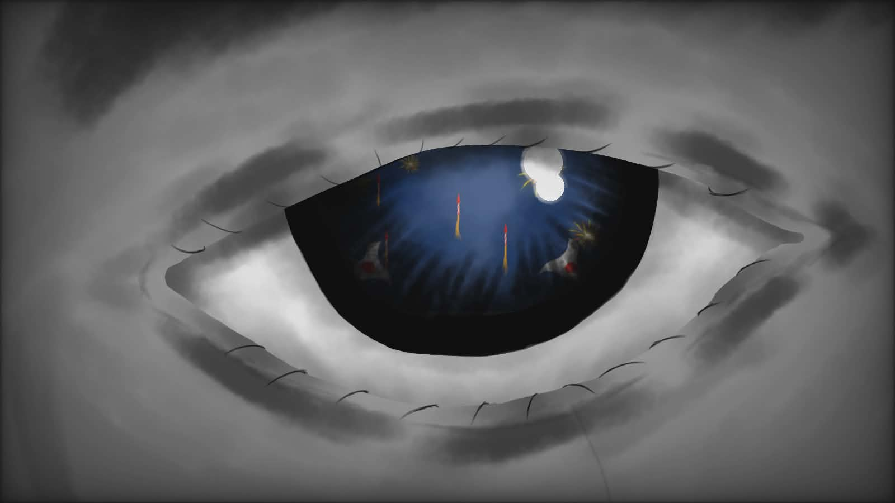

The Parade
/di • pa • reyd/
“May victory look joyous,
but the journey is sentimental.”
Chariots amidst a blazing parade,
Sorrowed by endless sadness,
Over the flowing champagne
Upon thy restlessness.
In your restless journey,
Thou art wise and artistic;
Fireworks blaze, eyes glaze,
As I ponder forlorn cries.
Context:
The poem entitled “The Parade” is a concealed melancholy amidst the success. This poem conveys the sentiment of the journey inside the person: “Victory is ours, but at what cost? ”
On the other hand, a lavish lifestyle shifts the mood and atmosphere of the story where the person is flooded over their past trauma: “Over the flowing champagne upon thy restlessness.” This stanza may also include “No one deserves a rest despite we yearn for it; it's just an illusion for your pride.”